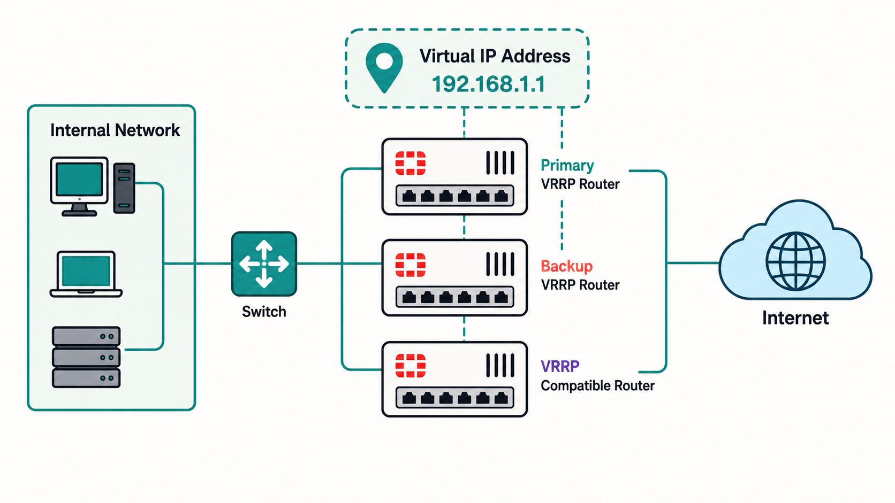
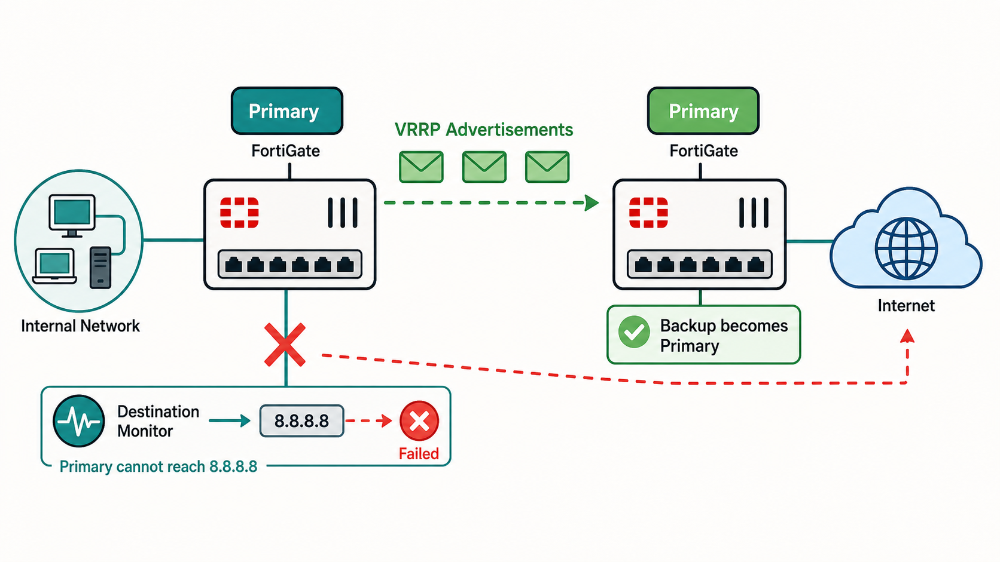
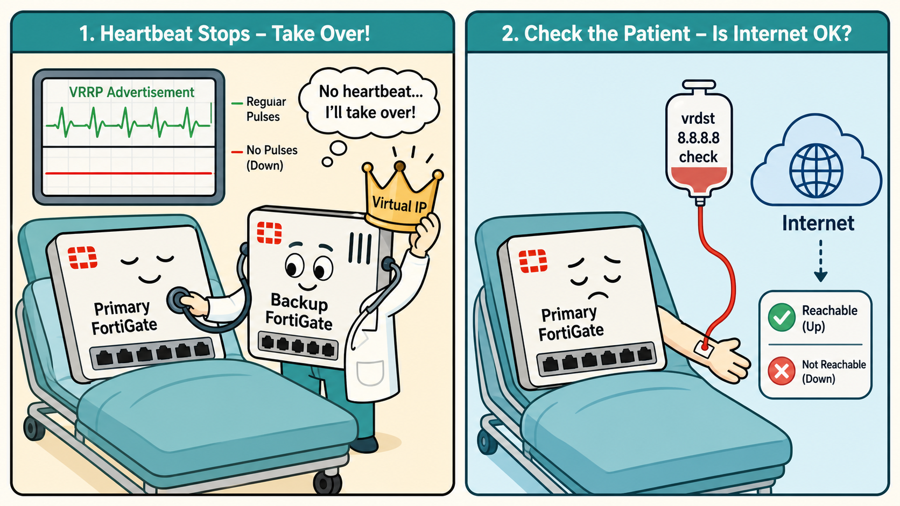
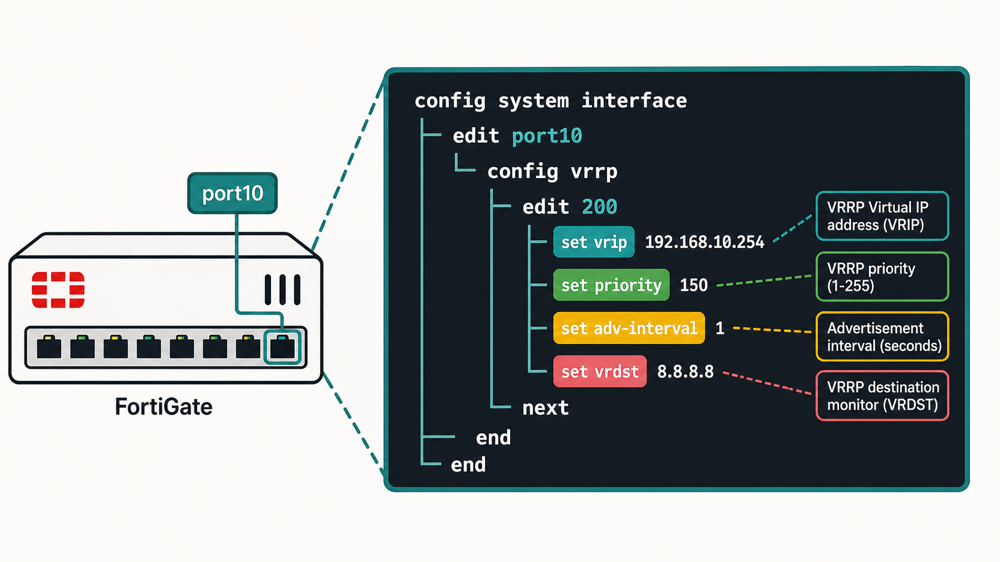
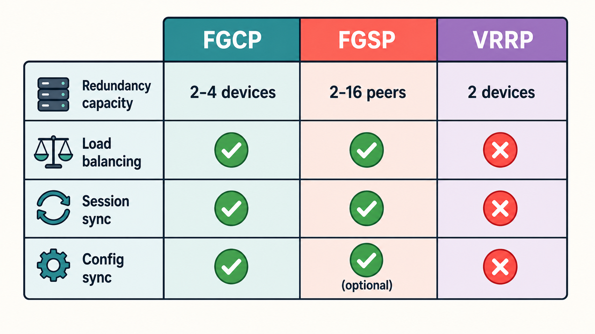

VRRP is an open IETF standard (RFC 3768/5798) designed to provide gateway redundancy without requiring any special client configuration. Unlike FGCP and FGSP, VRRP is vendor-agnostic — FortiGate can participate in a VRRP domain alongside Cisco, Juniper, or any other VRRP-compatible device.
- VRRP provides no session synchronization and no load balancing. What does it actually protect against — and in what scenarios is that sufficient?
- Why might an enterprise already running VRRP on routers prefer to add FortiGate to the existing VRRP domain rather than deploy FGCP?
VRRP Overview

Basic VRRP topology: Primary and Backup FortiGate sharing a virtual IP for gateway redundancy.
VRRP (Virtual Router Redundancy Protocol) is an open IETF standard that provides gateway redundancy by allowing multiple routers to share a single virtual IP (vrip) address. Endpoints use the virtual IP as their default gateway — when the primary router fails, the backup with the highest priority takes over the virtual IP seamlessly.
FortiOS supports VRRP versions 2 and 3, enabling both IPv4 and IPv6 VRRP configurations. You can create VRRP domains that include multiple FortiGate devices as well as other VRRP-compatible routers from any vendor. Different FortiGate models can participate in the same VRRP domain, making it ideal for integrating into existing heterogeneous network environments.
VRRP is configured at the interface level — specifically under each physical or VLAN interface. A FortiGate device can belong to multiple VRRP domains simultaneously, each with its own virtual IP and priority settings.
VRRP election is continuous — the primary router periodically sends advertisement messages, and the backup with the highest priority becomes primary if those advertisements stop. FortiGate extends this with destination address monitoring for connectivity-based failover, not just device-based failover.
- How does VRRP destination monitoring (vrdst) improve on basic VRRP advertisement-based failover — and what should the destination addresses be?
- When the failed primary VRRP router is restored, what happens — and how does this compare to FGCP override-enabled behavior?
VRRP Election and Failover

Primary sends VRRP advertisements; backup takes over when advertisements stop.
VRRP FortiGate devices in a VRRP domain periodically send VRRP advertisement messages to all other devices in the domain. The device with the highest priority becomes and remains the primary router. Backup routers monitor these advertisements — if they stop receiving them from the current primary, the backup with the highest priority takes over the virtual IP.
The primary FortiGate stops sending VRRP advertisements if:
- The device fails or crashes
- It loses connectivity to a configured VRRP destination address (vrdst)
FortiGate supports up to two VRRP destination addresses per VRRP instance, monitored by the primary device. If the primary cannot reach either destination, it stops advertising, triggering failover. Best practice is to use remote upstream addresses (such as 8.8.8.8) that validate internet reachability — not local addresses that would only test local interface health.
VRRP advertisements work like a heartbeat — silence triggers the backup to step in, whether the primary is dead or just disconnected from the outside world.
- VRRP advertisement — the primary's regular "I'm alive and reachable" pulse
- vrdst monitoring — checking not just that the heart beats, but that blood is reaching the extremities (internet)
- Backup promotion — the backup assumes control the moment silence exceeds the advertisement interval timeout

adv-interval in centiseconds (100 = 1 second). A lower interval means faster failover detection but more advertisement traffic. The default is 100 centiseconds (1 second).VRRP configuration on FortiGate is interface-level, nested under the VRRP object within the interface config. Each VRRP instance has its own ID, virtual IP, priority, and advertisement interval — multiple VRRP instances can exist on a single interface for different virtual IPs.
- VRRP is configured per interface — not at the system HA level. What does this mean for traffic that arrives on a different interface (e.g., the WAN side) during a failover?
- If you configure two VRRP instances on the same interface — one where FGT1 is primary (priority 200) and one where FGT2 is primary (priority 200 on the other instance) — what behavior does this create?
VRRP Configuration on FortiGate

VRRP configured under interface with vrip, priority, adv-interval, and vrdst parameters.
VRRP on FortiGate is configured under each network interface, nested within the interface configuration using config vrrp. Each VRRP instance is identified by a VRRP ID (1–255). Key parameters include:
| Parameter | Description |
|---|---|
| vrip | Virtual IP address shared by all VRRP members in the domain |
| priority | Election priority (1–255). Higher wins. Default: 100. |
| adv-interval | Advertisement interval in centiseconds. Default: 100 (= 1 second). |
| vrdst | Up to 2 destination IPs monitored for connectivity. Primary stops advertising if unreachable. |
| vrdst-priority | Priority reduction applied when vrdst monitoring fails (instead of stopping advertisements). |
config system interface
edit port10
config vrrp
edit 200
set vrip 10.10.101.250
set priority 200
set adv-interval 250
set vrdst 8.8.8.8
set vrdst-priority 30
next
end
next
endIn this example, VRRP instance 200 uses virtual IP 10.10.101.250 with a priority of 200. The advertisement interval is 250 centiseconds (2.5 seconds). If the primary loses connectivity to 8.8.8.8, its effective priority drops by 30 — potentially triggering a failover if the backup has a higher resulting priority.
FGCP, FGSP, and VRRP solve overlapping but distinct problems. The exam tests your ability to select the right protocol for a given scenario — understanding the limits of each is as important as understanding what each does.
- An enterprise needs session synchronization for seamless failover AND external load balancers already exist. Which protocol or combination is most appropriate?
- VRRP offers "unlimited" device capacity while FGCP is limited to 4 and FGSP to 16. Why isn't VRRP with many devices the obvious choice for large-scale deployments?
HA Protocol Comparison — FGCP, FGSP, VRRP

Three-way comparison: redundancy capacity, load balancing, session sync, config sync.
The following comparison helps identify which Fortinet HA protocol to deploy based on requirements:
| Feature | FGCP | FGSP | VRRP |
|---|---|---|---|
| Redundancy capacity | 2–4 FortiGates | 2–16 standalone / 2–16 FGCP clusters | Unlimited VRRP-compatible devices |
| Load balancing | Native active-active; VDOM partitioning | External load balancer | Not available |
| Session synchronization | Available via config | Available via config | Not available |
| Config synchronization | Native | Available if required | Not available |
| Vendor compatibility | FortiGate only | FortiGate only | Any VRRP-compliant device |
| Failover trigger | Monitored ports, uptime, priority | External load balancer detection | VRRP advertisement timeout / vrdst |
Use VRRP when: integrating with existing heterogeneous network infrastructure, requiring an open standard, or when gateway-level failover is sufficient and sessions can be dropped on failover.
Use FGCP when: deploying 2–4 FortiGates in a controlled environment, needing native configuration sync and session sync, and wanting built-in load balancing without external devices.
Use FGSP when: external load balancers exist, more than 4 devices are needed, asymmetric routing is unavoidable, or when combining standalone FortiGates from different sites into a session-synchronized pool.